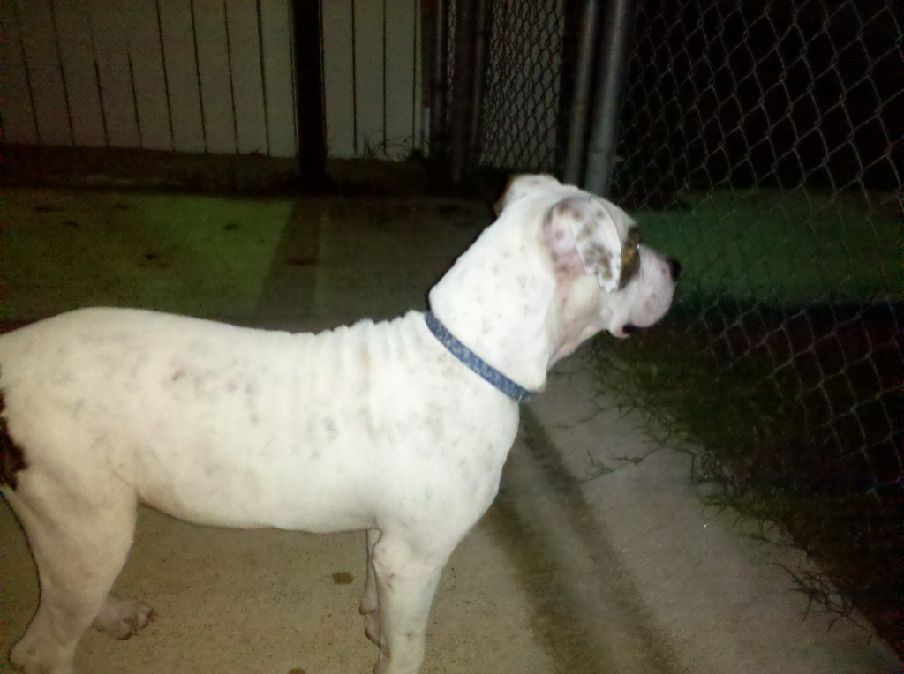

<?xml version="1.0" encoding="UTF-8"?>
<rss version="2.0"
	xmlns:content="http://purl.org/rss/1.0/modules/content/"
	xmlns:wfw="http://wellformedweb.org/CommentAPI/"
	xmlns:dc="http://purl.org/dc/elements/1.1/"
	xmlns:atom="http://www.w3.org/2005/Atom"
	xmlns:sy="http://purl.org/rss/1.0/modules/syndication/"
	xmlns:slash="http://purl.org/rss/1.0/modules/slash/"
	>

<channel>
	<title>Chronosynclastic Infundibulum &#187; dog</title>
	<atom:link href="http://www.semanticoverload.com/tag/dog/feed/" rel="self" type="application/rss+xml" />
	<link>http://www.semanticoverload.com</link>
	<description>The world through my prisms</description>
	<lastBuildDate>Thu, 07 Apr 2011 17:36:17 +0000</lastBuildDate>
	<language>en-US</language>
	<sy:updatePeriod>hourly</sy:updatePeriod>
	<sy:updateFrequency>1</sy:updateFrequency>
	<generator>http://wordpress.org/?v=3.5</generator>
		<item>
		<title>Lost Dog. Now in Brazos Animal Shelter</title>
		<link>http://www.semanticoverload.com/2010/09/20/lost-dog-now-in-brazos-animal-shelter/</link>
		<comments>http://www.semanticoverload.com/2010/09/20/lost-dog-now-in-brazos-animal-shelter/#comments</comments>
		<pubDate>Tue, 21 Sep 2010 04:37:51 +0000</pubDate>
		<dc:creator>Semantic Overload</dc:creator>
				<category><![CDATA[Uncategorized]]></category>
		<category><![CDATA[bryan]]></category>
		<category><![CDATA[dog]]></category>
		<category><![CDATA[lost]]></category>
		<category><![CDATA[retweet]]></category>
		<category><![CDATA[share]]></category>
		<category><![CDATA[urgent]]></category>

		<guid isPermaLink="false">http://www.semanticoverload.com/?p=783</guid>
		<description><![CDATA[Just following up on my earlier tweet about the lost dog. I found a dog lost and confused between Lynn Dr. and Sulphur Springs Rd. on South College Ave. in Bryan [Google Maps link] at around 9:45 PM in the evening. I saw it as I was driving to KEOS. It was sitting in the [...]]]></description>
				<content:encoded><![CDATA[<p>Just following up on my <a title="Tweet about lost dog I found in Bryan" href="http://twitter.com/chrosyn/statuses/25082640972">earlier tweet about the lost dog</a>.</p>
<p>I found a dog lost and confused between Lynn Dr. and Sulphur Springs Rd. on South College Ave. in Bryan [<a title="Google Maps link with a marker for the location where I found the dog." href="http://maps.google.com/maps?z=16&amp;q=30.637433,-96.356525%28Found%20dog%29">Google Maps link</a>] at around 9:45 PM in the evening. I saw it as I was driving to KEOS. It was sitting in the middle of the road and all traffic was going around her. I pulled over and tried to get it to move to the side. It was dazed and very afraid. At first it started moving away from me in fear, but I managed to get her out of the street. She is obviously someone&#8217;s pet since she has a collar.</p>
<p>I called Brazos police who then transferred to me Brazos animal control. To make a long story short, I have dropped it off at the fenced side yard at Brazos Animal Shelter. Everyone in Bryan/College Station area please spread the word so that the owner may collect the dog. I fear that if the owner does not claim her in three days, she might be put down (Brazos animal shelter it not a no-kill shelter; they kill animals that they deemed not likely to be adopted).</p>
<p><iframe width="300" height="300" frameborder="0" scrolling="no" marginheight="0" marginwidth="0" src="http://maps.google.com/maps?q=30.637433,-96.356525(Found+dog)&amp;ie=UTF8&amp;ll=30.637469,-96.356535&amp;spn=0.022155,0.025749&amp;z=14&amp;iwloc=A&amp;output=embed"></iframe><br />
<small><a style="text-align: left;" href="http://maps.google.com/maps?q=30.637433,-96.356525(Found+dog)&amp;ie=UTF8&amp;ll=30.637469,-96.356535&amp;spn=0.022155,0.025749&amp;z=14&amp;iwloc=A&amp;source=embed">(Location of where I found the dog) View Larger Map</a></small></p>
<p>Here are a few pictures of the dog to help the owner identify it.</p>
<p><a href="../../../wp-content/uploads/2010/09/IMG_20100920_213843.jpg"></a></p>
<p><a href="../../../wp-content/uploads/2010/09/IMG_20100920_220606.jpg"></a></p>
<p><a href="../../../wp-content/uploads/2010/09/IMG_20100920_214019.jpg"></a></p>
<p>It&#8217;s a really nice and friendly dog. I&#8217;ll be really sad if it is put down. Please share this post on Facebook/Twitter/MySpace/listserv/email or any other means to get the owner to see it.</p>
]]></content:encoded>
			<wfw:commentRss>http://www.semanticoverload.com/2010/09/20/lost-dog-now-in-brazos-animal-shelter/feed/</wfw:commentRss>
		<slash:comments>0</slash:comments>
		</item>
		<item>
		<title>Big Banyan Tree near Bangalore</title>
		<link>http://www.semanticoverload.com/2008/12/14/big-banyan-tree-near-bangalore/</link>
		<comments>http://www.semanticoverload.com/2008/12/14/big-banyan-tree-near-bangalore/#comments</comments>
		<pubDate>Sun, 14 Dec 2008 13:09:23 +0000</pubDate>
		<dc:creator>Semantic Overload</dc:creator>
				<category><![CDATA[humor]]></category>
		<category><![CDATA[india]]></category>
		<category><![CDATA[personal]]></category>
		<category><![CDATA[bangalore]]></category>
		<category><![CDATA[banyan]]></category>
		<category><![CDATA[big banyan tree]]></category>
		<category><![CDATA[dog]]></category>
		<category><![CDATA[monkey]]></category>
		<category><![CDATA[strangler fig]]></category>

		<guid isPermaLink="false">http://www.semanticoverload.com/?p=273</guid>
		<description><![CDATA[My month long vacation back home in Bangalore began on the 10th of this month. It started with a visit to the Big Banyan Tree. It is a 400 year old Banyan Tree (that&#8217;s Strangler Fig, for you Yankees ;) ) that spans over 2 acres. It was quite a sight to see with aerial [...]]]></description>
				<content:encoded><![CDATA[<p>My month long vacation back home in Bangalore began on the 10th of this month. It started with a visit to the <a title="Big Banyan Tree - wikimapia" href="http://wikimapia.org/104457/Big-Banyan-Tree-Bangalore">Big Banyan Tree</a>. It is a 400 year old <a title="Banyan Tree: Wikipedia" href="http://en.wikipedia.org/wiki/Banyan">Banyan Tree</a> (that&#8217;s Strangler Fig, for you Yankees ;) ) that spans over 2 acres.</p>
<p>It was quite a sight to see with aerial prop roots all over the place.</p>
<div><div class="wp-caption alignnone" style="width: 650px"><p class="wp-caption-text">View of the Big Banyan Tree upon entering the premises</p></div></div>
<p><span id="more-273"></span><br />
It was difficult to tell where the center of the tree was. No matter which part of the tree you saw, you seemed to see the center with similar trunks and branches all over the the place! Here is shot of the tree which look like its the center:</p>
<div><div class="wp-caption alignnone" style="width: 650px"><p class="wp-caption-text">Big Banyan Tree: Is this the trunk?</p></div></div>
<p>Here is another one that seems to suggest an old &#8216;main trunk&#8217; that no longer is:</p>
<div><div class="wp-caption alignnone" style="width: 650px"><p class="wp-caption-text">Big Banyan Tree: The old trunk perhaps?</p></div></div>
<p>From the looks of it, the tree is still growing. I saw several aerial prop roots still growing towards the ground. 400 years old and still kicking!</p>
<div><div class="wp-caption alignnone" style="width: 650px"><p class="wp-caption-text">Big Banyan Tree: Prop roots are still growing</p></div></div>
<p>Ironically, the most interesting part of the visit was not the tree itself. It was the happenings around the tree that was the most fascinating. The imitation of forms between a man and a monkey had me glued for over 30 minutes! Here&#8217;s a glimpse of what I saw.</p>
<table border="0">
<tbody>
<tr>
<td>
<div><div class="wp-caption alignleft" style="width: 317px"><p class="wp-caption-text">Sharing the meal time</p></div></div>
</td>
<td>
<div><div class="wp-caption alignleft" style="width: 317px"><p class="wp-caption-text">Whatever it is, it has both of them transfixed.</p></div></div>
</td>
</tr>
</tbody>
</table>
<p>Here&#8217;s more, only this time its between man and his best friend.</p>
<div><div class="wp-caption alignnone" style="width: 650px"><p class="wp-caption-text">Let the sleeping... well, you know the rest</p></div></div>
<p>The rest was well&#8230; monkey business.</p>
<div><div class="wp-caption alignnone" style="width: 650px"><p class="wp-caption-text">What are you lookin&#39; at?</p></div></div>
<div><div class="wp-caption alignnone" style="width: 650px"><p class="wp-caption-text">We are the best of friends</p></div></div>
<div><div class="wp-caption alignnone" style="width: 650px"><p class="wp-caption-text">Until one of us has something the other doesn&#39;t</p></div></div>
<div><div class="wp-caption alignnone" style="width: 650px"><p class="wp-caption-text">Especially food!</p></div></div>
<div><div class="wp-caption alignnone" style="width: 650px"><p class="wp-caption-text">I want it! It&#39;s mine!</p></div></div>
<div><div class="wp-caption alignnone" style="width: 650px"><p class="wp-caption-text">After it&#39;s all over, we kiss and make up :)</p></div></div>
<p>A great start to my vacation! Can&#8217;t wait what the rest of the month will bring about!</p>
]]></content:encoded>
			<wfw:commentRss>http://www.semanticoverload.com/2008/12/14/big-banyan-tree-near-bangalore/feed/</wfw:commentRss>
		<slash:comments>0</slash:comments>
		</item>
	</channel>
</rss>
